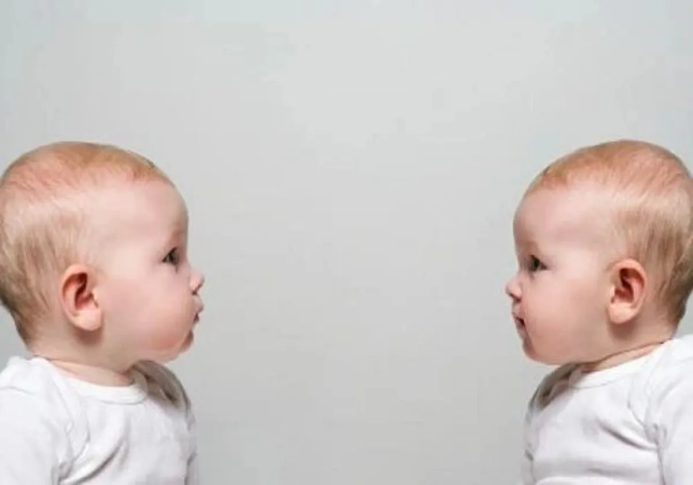
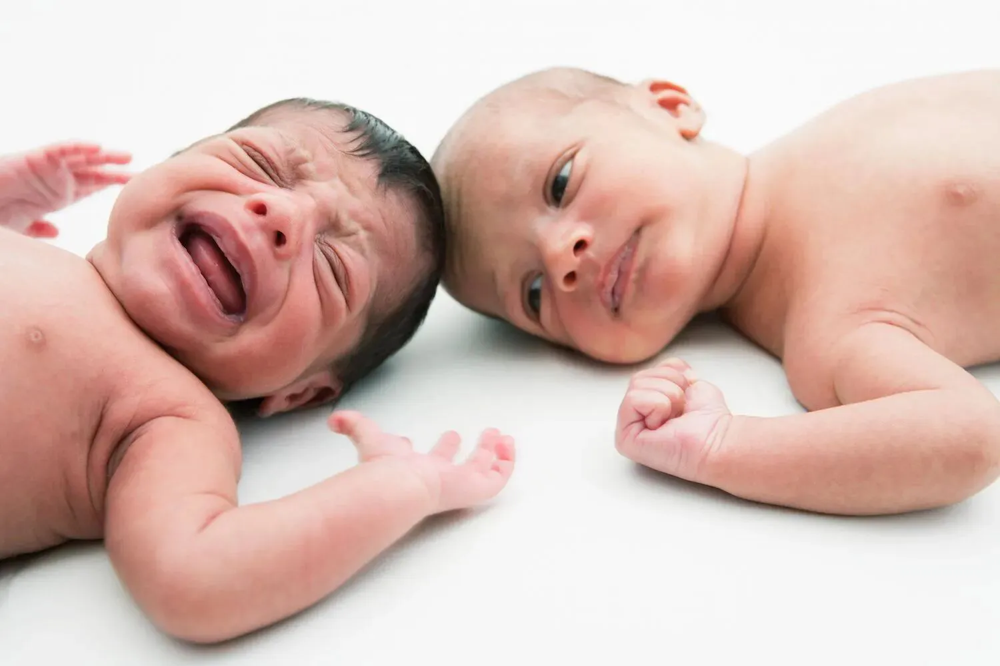
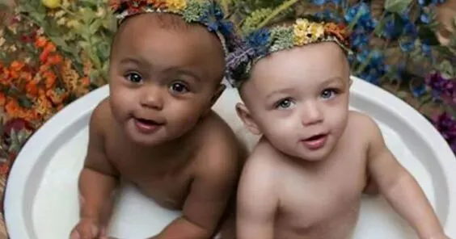
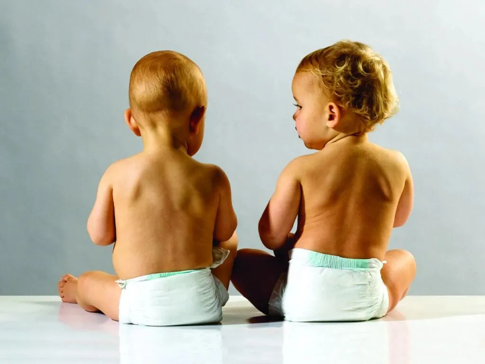

文|圆圈妈
网图|侵删
【帮主圆圈妈妈】：知乎上有一个问题很无厘头：“双胞胎的丁丁一样大吗？”
收到邀请回答时，我不厚道地笑了，心想：
“怎么会有那么无聊的人？”
晚上给圆圈兄弟洗澡，无聊的我偷偷对比了下，亲妈实地考察后的回答是：不一样！（希望这段细节描述不要被长大后的圆圈看到…/尴尬）
仔细想想，双胞胎的那些差异性，何止丁丁不一样大那么简单。
经常会看到妈妈群吐槽，双胞胎总有很多不一样的地方：一个单眼皮一个双眼皮，一高一矮，一胖一瘦，一个安静一个好动…究竟是抱错了？还是生错了？
今天这篇来说说双胞胎圆圆圈圈兄弟成长中的那些差异性，有点搞笑，又有点重口味。
如此自爆“家丑”只是想安慰你，你不是一个人在怀疑：咱是不是生了对假双胞胎！
身高体重
刚出生那会儿，圆圆圈圈一样长，都是47厘米，到了半岁后，圆圆就高出圈圈1厘米，而且一直保持着这个差距，不多也不少，就是差1厘米，好像有魔力一般，从来没有变过。
跟身高存在“1”差距的还有体重，圆圆出生时体重5.3斤，圈圈5.2斤。差不多到了半岁，圆圆比圈圈重1斤，有段时间，圈圈赶超上来了，可是很快又被圆圆挤下去了，好像他已经默认了，为了当老大，怎能比弟弟轻呢？
五官相貌
圈圈在子宫内的位置是右下腹，34周照B超的时候，医生就对我说，那个位于右下腹的宝宝的头部被挤得有点变形了。
果然生下来后，圈圈的小脑瓜明显小一些，直到现在4岁＋，依然觉得他们的头型长得不一样。
多亏这个不一样，当我有时迷糊分不清他们谁是谁的时候，我只要把他们两个放在一起，把脸掰正，看额头，就真相大白了。
好在虽然圈圈头小，但是脑袋瓜子明显比圆圆灵活很多，而且贼精，是个十足的心机BOY！
总体而言，同卵的哥俩五官相貌上，随着年龄的增长是越长越像，妥妥的复制粘贴，连耳垂子摸起来的手感都是一样样的，丝毫不给那些外行人透露一点破绽。
大动作发育
谁也没想到，曾经被医生高度怀疑是脑瘫儿的圆圆，居然不到1岁就就能推着椅子满客厅走，并在神不知鬼不觉的某一天，不用大人的搀扶，一咕噜从地上站起来，颤巍巍地走上几步。
而被我们一直很看好的圈圈还停留在扶着站立中，训练多次后，依然没有进展，直到1岁3个月，才能晃悠悠地走两步。
当圆圆可以跑跳了，圈圈走路才算稳当些，可把我们捉急地好想把圈圈拎起来飞着去追上圆圆。
语言表达能力
果然，上帝是公平的。
晚走路的圈圈，说话较早，比较能说，爱说，才3岁就可以把歌词改编，而且毫无违和感，而圆圆经常说了上句之后就忘记下一句该说什么，结巴了许久，愣是没下文了。
我给他们讲完绘本后提问题，先回答的那个人总是圈圈，而且说起来滔滔不绝。
圆圆只有在边上附和的份，有时候他想要补充，可是叽叽咕咕了几句就放弃了，他好像不够自信，觉得圈圈已经说得很好了，不需要再说了。
还有一次参加卫视的栏目海选，全程都是圈圈在救场，做自我介绍，唱歌，读唐诗，而圆圆只会在一旁一脸娇羞状，拿着麦克风傻笑卖萌。
饮食习惯
有些家庭因为某种原因，导致双胞胎不能放在一起抚养，如大宝跟着奶奶，小宝跟着外婆。环境不一样，吃喝拉撒睡也不一样，存在差异性在所难免。
而圆圈一直被我们带在身边，从未分开过，成长环境几乎一样，饮食习惯方面同样有诸多不同点。
4月龄+，开始吃鸡蛋。圈圈喜欢吃蛋黄，圆圆喜欢吃蛋白，本来需要从吃蛋黄再慢慢过渡到吃蛋白的，结果，圆圆抓着蛋白不放，于是就吃了！
也罢，一个鸡蛋就能解决一场恶战，挺划算的！
圆圆是肉食动物，爱吃肉；圈圈是清真一族，爱吃青菜。结果就是，吃肉的圆圆，长得结实，有肉感；吃素的圈圈偏瘦，总是在1-1.5斤之间的差距徘徊。
于是，我又多了一个分清他们的法子，把他们两个分别抱起来，重的那个肯定是圆圆。
圈圈喜欢吃带点酸味的食物，如柚子，橘子，橙子；圆圆吃到一点酸就会吐出来，只喜欢吃甜腻腻的食物，一碗白粥放点糖，可以吃两大碗。
除了喜爱吃的食物不一样，吃的顺序，吃的速度也不一样。
圆圆喜欢先把所有菜吃了，再看情况是不是要吃饭；圈圈喜欢先吃白米饭，再看情况要不要吃菜。
圆圆每次喝奶像饿了三天三夜似的豺狼，210ML的配方奶，不出10分钟就秒光；而圈圈则像一只树懒，永远都是慢半拍，圆圆要吃下一轮了，他还在上半场优哉游哉地吃着！
搞笑的是，同样是喝奶，一个边喝边放屁，一个边喝边打嗝！
还有更重口味的是：明明吃的东西是一样的，拉的臭臭却不一样；尿湿裤子时，总是一个前裤裆，一个后裤裆….诡异极了！
性格特征
总体而言，圈圈属于乖巧温顺型，只要耐心点说，他都不会太抗拒并愿意服从安排，但不代表他很弱，他对自己想要的东西特别执着，因此在抢玩具这件事情上，凭着永不放弃的精神，他经常占上风。
而圆圆比较顽皮倔强，类似于茅坑里的石头—又臭又硬，犟脾气一上来，十头牛都拉不回来。然而，这样一头犟驴却是个“怂包子”，当圈圈以压倒式的气场把本属于自己的玩具抢走时，他只能暗自生闷气，从不敢反抗。
若是因为抢东西打起来了，被打，被咬的也总是圆圆，圈圈一直是胜利者居多。意思是，倘若单挑，基本上所有人都会押“圈圈必胜”。
因此，外行人的总结就是：圆圆吃硬不吃软，圈圈吃软不吃硬。
而老母亲的想法是，圆圆可能是顶着“哥哥”的头衔，不排除有让着圈圈的可能性，有时看他发飙起来，也是个厉害的主儿。
总之，两个都是成精的神兽，不好惹，特难搞！（此处省略一万字的/哭）
学习能力
上幼儿园后，老师对他们哥俩的评价也不一样，总体而言，圈圈综合各方面均略胜一筹，学做操，学唱歌，学画画，学英语…最先学会的那个人总是圈圈。
而圆圆总是在各方面有点小瑕疵，上课不专心，做作业拖拉...总是落后圈圈，好在不是经常如此，一般是个别现象持续一段时间后，圆圆就会奇迹般追赶上来，与圈圈不相上下。
一直以来，我总是以他们偶尔的神同步而暗自窃喜，稍有不一致时，就觉得“那是不可以的”，然后就人为地干预，必须让他们一模一样，才对得起“他们是一对双胞胎”这个头衔！
如此这样的想法，愚昧了！
著名哲学家莱布尼茨说过：“没有两片完全相同的树叶，世界上没有性格完全相同的人。”每一个孩子都是独一无二的，成长上必定会存在差异，而这些差异本身并无好坏之分。
我们当父母的，首先要承认这个差异性的存在，动态观察并因人施教，让双胞胎各自的优势得以充分发挥，让手足彼此间在互相认同和赏识中健康成长，那样的教育才算成功！
说的很漂亮，但问题来了！
当双胞胎一个能跑能跳，另一个还在摸滚带爬
当双胞胎一个会诵读唐诗三百首，另一个只会唱“两只老虎”
当双胎之一太弱整天被另一个欺负，不懂还手时，
当双胞胎一个考100分，另一个却总是不及格时
.....
如此这些，我们为人父母如何做到肺不气炸，心不慌乱，面不改色，优雅淡定地去承认这个差异性呢？
下一篇《为什么双胞胎总是一个天使，一个魔鬼》继续来探讨。
-END-
今日互动话题
#你家的双胞胎有哪些不一样吗#
评论区聊一聊呗！
微信公众号：孖仔帮
ID : twinsbang
专注双胞胎孕育，养育，教育经验分享
@www.sgguy.com
扫码关注我们
我知道你在看哟



